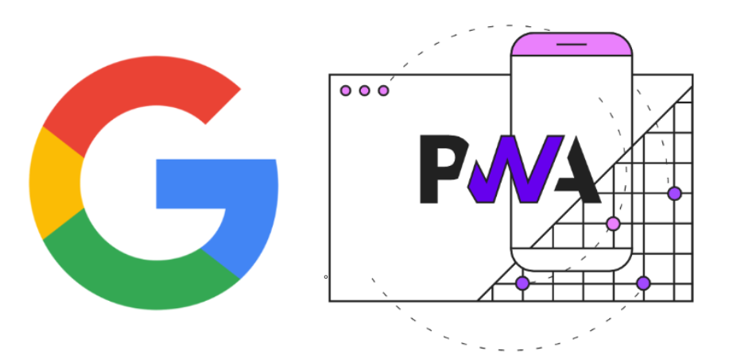

April 18, 2023 by Branislav Stojanović
Progresivne Veb Aplikacije
Dugo vremena ukoliko vam je bila potrebna aplikacija koju su korisnici mogli da koriste na različitim uređajima, morali biste da napravite posebne verzije te aplikacije za svaku od platformi. Pre svega, potreban vam je veb sajt koji je responzivan, prilagođen za ekrane različitih uređaja, desktop, laptop računara i mobilnih uređaja. Porast popularnosti mobilnih uređaja doveo je do povećane potražnje za mobilnim aplikacijama. Od njih se očekuje da imaju glatko i prirodno korisničko iskustvo i pristupačnost. U tom slučaju verovatno biste se opredelili da napravite po jednu verziju aplikacije za svaku od platformi, počevši od Android i iOS platformi, kao najpopularnijih. Ipak razvoj i održavanje zasebnih aplikacija za svaku od platformi je veoma skup proces, u pogledu vremena i troškova. To uglavnom zahteva angažovanje više programera, jer su oni koji koji imaju znanja za razvoj aplikacija i za Android i za iOS retki poput igle u plastu sena. Takođe bi bilo veoma teško konstanto održavati sinhronizaciju u obe verzije aplikacije jer su napravljene na potpuno različit način.
Tu Google uskače u igru, koristeći napredan razvoj internet pretraživača da pruži jedinstveno rešenje za sve platforme. Oni su 2015. godine predstavili progresivne veb aplikacije(PWA) sa idejom da postave korisničko iskustvo na mobilnim uređajima u žižu interesovanje. Danas postoje mnogi primeri veoma popularnih mobilnih aplikacija koje su baš napravljene kao PWA, neke od njih su WhatsApp, Twitter i Instagram. Kladim se da to niste znali!

Prvo, hajmo da definišemo šta je tačno PWA. Progresivna veb aplikacija je zapravo veb-sajt koji izgleda i ponaša se kao mobilna aplikacija. PWA su uglavnom izrađene korišćenjem standardnih veb tehnologija poput HTML-a, CSS-a i Javascripta. Ipak, njih je takođe moguće instalirati na mobilni telefon i koristiti ih poput običnih moblinih aplikacija. PWA su napravile revoluciju time što su na veb donele razne funkcionalnosti koje su prethodno bile namenjene samo za obične(nativne) mobilne aplikacije.
PWA su takođe veoma brze i responzivne, zbog toga što su izrađene uz pomoć veb tehnologija one su optimizovane, veoma brze i performantne. PWA su takođe dizajnirane da rade podjednako dobro i na desktop i mobilnim uređajima, osiguravajući da korisnici imaju konzistentno iskustvo na svim platformama.
Neke od najboljih funkcionalnosti koje su progresivne aplikacije donele u svet veba su:
Offline mod - Funkcionalnost koja je prethodno bila nezamisliva za veb-sajtove. Da li ste primetili da kada uđete u WhatsApp bez internet konekcije, aplikacija idalje radi? Čak možete i pisati poruke, a kada se ponovo povežete na internet te poruke će momentalno biti poslate. Ovo je moguće zahvaljujući skriptama koje se nazivaju Service workerima, to su skripte koje se izvršavaju u pozadini odvojeno od konteksta glavne aplikacije.
Pozadinska ažuriranja i sinhronizacija - Za razliku od običnih mobilnih aplikacija koje zahtevaju konstantna ažuriranja ili reinstaliranja, progresivne aplikacije se ažuriraju u pozadini, takođe zahvaljujući Service Workerima. Ovakvo ponašanje doprinosi boljem korisničkom iskustvu.
Push notifikacije - Dugo vremena, korisnici su morali da konstantno proveravaju veb-sajt kako bi videli da li ima nečeg novog, a obaveštenja su bila karakteristična samo za nativne aplikacije. Sa progresivnim aplikacijima ta funkcionalnost dolazi na veb! Pogidite kako je to moguće? Service workeri su odgovor i ovaj put. Oni mogu da se izvršavaju u pozadini čak i kada korisnik ne koristi aplikaciju i mogu poslati push notifikaciju na korisnikov mobilni uređaj kada se desi neki događaj.
PWA su nezavisne od platforme - zato što se zapravo izvršavaju unutar pretraživača, nije bitno na kom se operativnom sistemu to zapravo dešava. Razvoj i održavanje jedne verzije aplikacije i jednog koda za sve uređaje je višestruko efektivno za smanjenje troškova i uštedu vremena.
Kako da pretvorite svoj veb sajt u PWA?
Dobre vesti - lakše je nego što mislite!
Prvo, otvorite Lighthouse tab u developer alatkama (developer tools), i pokrenite analizu svog veb sajta.

Pre svega, morate obezbediti da veb sajt bude brz i prilagođen mobilnim uređajima. To nije kvantna fizika, jer većina veb sajtova već ispunjava ovaj zahtev. Teži deo je obezbediti da aplikacija bude dostupna i bez internet konekcije. Za ovaj izazov neophodno je registrovati service workera koji se izvršava u pozadini, obavljajući taskove poput keširanja, sinrhonizacije i osluškivanja za push notifikacije.
if ('serviceWorker' in navigator) {
navigator.serviceWorker.register('service-worker.js')
.then(function(registration) {
console.log('Service worker registration successful');
})
.catch(function(err) {
console.log('Service worker registration failed: ', err);
});
}
Finalni korak je definisanje manifest.json fajla. Ovo je konfiguracioni fajl koji sadrži informacije o vašoj aplikaciji, poput njenog imena, ikonica i početne stranice. Ovaj fajl je takođe zadužen da obavesti pretraživač da se zapravo ne radi o običnoj već o progresivnoj aplikaciji.
{
"name": "Tech9320 Web App",
"short_name": "Tech9320",
"start_url": "/index.html",
"display": "standalone",
"background_color": "#ffffff",
"theme_color": "#ffffff",
"icons": [
{
"src": "icon-512.png",
"sizes": "512x512",
"type": "image/png"
}
]
}
Kada zadovoljite ove uslove, videćete da se PWA bedž u Lighthousu otključao.
Čestitamo, vaša aplikacija je spremna za preuzimanje na mobilni uređaj ili postavljanje na prodavnice aplikacija poput Microsoft Store-a i Google Play Store-a.
Iako su u ovom članku PWA aplikacije predstavljene kao jednostavno rešenje za različite uređaje, razvoj dobre progresivne aplikacije koja zadovoljava sve gore pomenute uslove može biti veoma izazovan zadatak. Ovde u Tech9320, developeri poseduje odlične veštine i iskustvo u rešavanju ovih zadataka. Bilo da želite da pretvorite vaš veb sajt u progresivnu aplikaciju ili želite da je izgradite od nule, uveravamo vas da ste na pravom mestu. Mi možemo kreirati progresivnu aplikaciju koja će nadmašiti vaša očekivanja u rekordnom roku! Budite slobodni da nas kontaktirate.